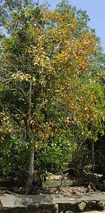
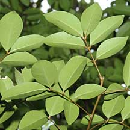
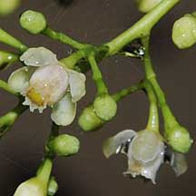

|
|
| plants text index | photo index |
| mangroves | Xylocarpus in general |
| Nyireh
batu Xylocarpus moluccensis Family Meliaceae updated Mar 2020 Where seen? This handsome tree is sometimes seen in our larger mangroves, usually alone or a few trees, often on sandy areas. It is commonly seen at Pulau Ubin and at Pasir Ris mangroves. Xylocarpus mekongensis is a synonym of X. moluccensis. Features: Tree 5-20m tall. Bark with longitudinal fissures. Small buttress roots or no buttress roots, many peg-shaped (blunt-tipped, nearly cylindrical) pneumatophores. |
 Leaflets eye-shaped with pointed tips. Pulau Ubin, Jan 09 |
 Bark with longitudinal fissures. Pulau Ubin, Jan 09 |
 Seasonally, all the leaves may turn yellow. Pulau Ubin, Jan 10 |
 Leaflets underside. Pasir Ris Park, May 09 |
 Chek Jawa, Aug 09 |
| Compound leaf comprising 2-3 pairs of leaflets (4-12cm long) that
are oblong with more pointed tips, thin and leathery. The compound
leaves are arranged in a spiral and wither to a vivid yellow. Seasonally, all the leaves on a tree may turn yellow, giving an autumn feel to the mangrove forest. Flowers tiny white to pinkish in clusters on an inflorescence. Fruit oval (not globular) (8-12cm in diameter) containing 5-10 seeds. |
 Flowers in clusters. Chek Jawa, Aug 09 |
 Chek Jawa, Aug 09 |
 Fruit elliptical. Pulau Ubin, Jan 09 |
| Human
uses: According to Giesen, the timber is moderately light
and soft, but strong and seasons well. It is used in construction
of houses and boats. In Java, also for the handles of traditional
daggers called 'kris'. It is also used as firewood. Traditional medicinal
uses include the seeds for treating stomachaches, fruits to increase
appetite, bark tannin for intestinal lailments. The bark is also used
to tan fishing nets. Status and threats: It is listed as 'Endangered' on the Red List of threatened plants of Singapore. |
| Nyireh batu on Singapore shores |
On wildsingapore
flickr
|
|
Links
References
|